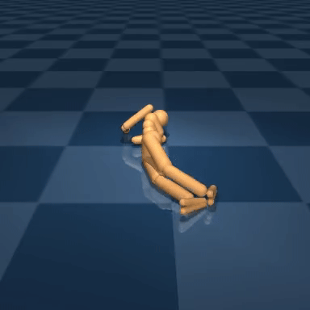
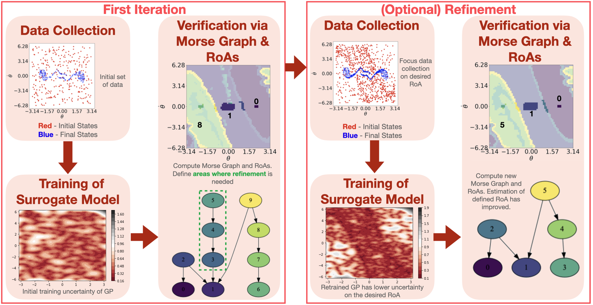
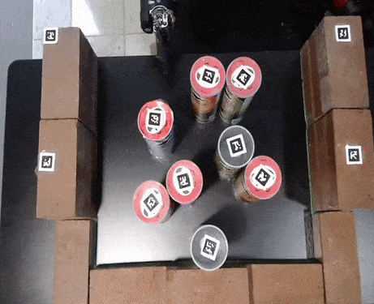
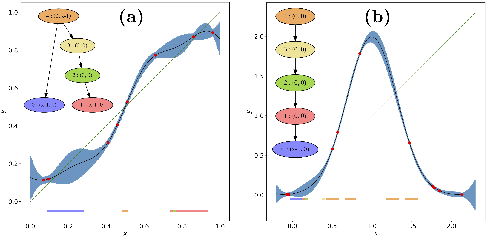
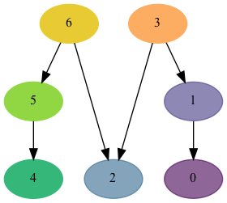
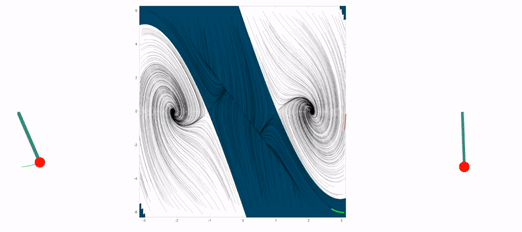

Research
My research goals are focused on analyzing data from robotic controllers and dynamical systems to
understand and obtain information about the global dynamics, such as identifying attractors and their regions of attraction (RoA), for safe deployment and synthesizing more effective hybrid solutions.
My Publications
Dynamics, Data Analysis, and Robotic Control:

MORALS: Analysis of High-Dimensional Robot Controllers
via Topological Tools in a Latent Space
E. R. Vieira , A. Sivaramakrishnan, S. Tangirala, E. Granados, K. Mischaikow and K. E. Bekris.
2024 International Conference on Robotics and Automation (ICRA).
Best Paper Award in Automation finalist.
arXiv:2310.03246

Data-Efficient Characterization of the Global Dynamics of Robot Controllers with Confidence Guarantees.
E. R. Vieira , A. Sivaramakrishnan, Y. Song, E. Granados, M. Gameiro, K. Mischaikow, Y. Hung and K. E. Bekris.
International Conference on Robotics and Automation (ICRA) 2023.
paper
Effective and Robust Non-Prehensile Manipulation via Persistent Homology Guided Monte-Carlo Tree Search.
E. R. Vieira , K. Gao, D. Nakhimovich, R. Wang, K. E. Bekris and J. Yu.
International Symposium on Experimental Robotics (ISER 2023)
arXiv:2210.01283


Identifying Nonlinear Dynamics with High Confidence from Sparse Data
B. Batko, M. Gameiro, Y. Hung, W. Kalies, K. Mischaikow and
E. R. Vieira
SIAM Journal on Applied Dynamical Systems
paper
Morse Graphs: Topological Tools for Analyzing the Global Dynamics of Robot Controllers.
E. R. Vieira , E. Granados, A. Sivaramakrishnan, M. Gameiro, K. Mischaikow and K. E. Bekris.
Workshop on the Algorithmic Foundations of Robotics 2022, WAFR-22..
paper


Persistent Homology for Effective Non-Prehensile Manipulation.
E. R. Vieira , D. Nakhimovich, K. Gao, R. Wang, J. Yu and K. E. Bekris.
International Conference on Robotics and Automation (ICRA) 2022, pp. 1918–1924.
paper
This work explores the use of topological tools - persistent Homology for achieving effective non-prehensile manipulation in cluttered and constrained workspaces.
Theoretical Math - Topology and Dynamics:
(7) Franzosa, R.; de Rezende, K. A.; Vieira, E.R. Generalized Topological Transition Matrix. Topol. Methods Nonlinear Anal. 48 (2016), no. 1, 183-212.
(8) Franzosa, R.; Vieira, E.R. Transition matrix theory. Transactions of the American Society, v. 369, p. 7737, 2017.
(9) D. Lima; M. Silveira; E. R. Vieira Covering Action on Conley Theory. Ergodic Theory and Dynamical Systems, 1-33, 2022. doi:10.1017/etds.2022.13.
(10) A. Romero; E.R. Vieira Existence of Periodic Orbits for Piecewise-Smooth Vector Fields with Sliding Region via Conley Theory. arXiv preprint, 2021.
arXiv:2106.15569
(11) R. Bastos, N.R. Rocco, E.R. Vieira Finiteness of homotopy groups related to the non-abelian tensor product, Annali di Matematica Pura ed Applicata- 1923 (2019).